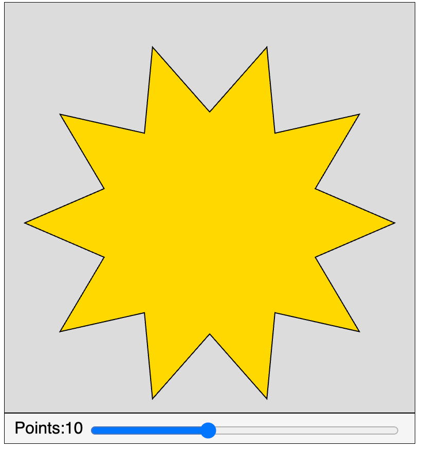

Gold Star

Prompt
Draw a gold star width number points as a parameter.
Sample Code
1 2 3 4 5 6 7 8 9 10 11 12 13 14 15 16 17 18 19 20 21 22 23 24 25 26 27 28 29 30 31 32 33 34 35 36 37 38 39 40 41 42 43 44 45 46 47 48 49 50 51 52 53 54 55 56 57 58 59 | |
Key Learnings
- We create a new custom JavaScript function called
star() - We add parameters for the inner radius, outer radius and number of points
- We use the
beginShape()andendShape()to surround our points on the start - We use
cos()andsin()to calculate the proper x and y points as we go around the star
Lesson Plan: Drawing Stars with Variable Points
Objective
Students will understand the geometric concepts of radius, angles, and symmetry by drawing stars programmatically.
Grade Level
9th Grade
Subject
Geometry
Materials Needed
- Computers with Internet access
- Projector for demonstration
- Students will need access to a web browser and provide a link to the p5.js editor. They can use the copy icon in the upper right corner of the code example above.
Duration
1 hour
Activities
Introduction (5 minutes)
- Discussion: Briefly discuss what students know about stars and their shapes. Introduce the concept of radius, angles, and symmetry in geometry.
- Demonstration: Show the star drawing code and explain the setup, draw functions, and the star function.
Activity Part 1: Exploring the Code (10 minutes)
- Hands-On: Students will run the code and play with the points slider to see how the number of points affects the star's shape.
- Questions for Discussion:
- How does changing the number of points alter the shape of the star?
- What happens when you use different numbers of points (odd vs. even)?
Activity Part 2: Calculating Angles (15 minutes)
- Explanation: Explain how the angles in the star are calculated (
angle = TWO_PI / npoints). - Activity: Have students calculate the angles for different numbers of points and predict the shapes before testing them on the computer.
Activity Part 3: Customize the Lab (10 minutes)
- Creative Task: Challenge students to modify the code to create different variations of the lab
- Add Color Sliders: Add a slider to change the fill color of the star, the border color and the border width. Students will need to adjust the position of the sliders, labels and values. You will need to learn to use the strokeWeight function.
- Add New Radius Sliders: Add sliders for controlling the length of the inner and outer radius of the star.
- Sharing: Allow a few students to share their creations and explain the geometric concepts used.
- Use ChatGPT: Use ChatGPT to add new code and test the new code.
Conclusion (5 minutes)
- Summary: Recap the key geometric concepts learned through the activity.
- Homework Assignment: Students can write a short reflection on what they learned about geometry from this exercise or create a small project where they use the code to explore a geometric concept.
Assessment
- Participation in discussions and activities. Do they share their knowledge and their bugs?
- The ability of students to add features.
- Creativity and understanding of the concepts.